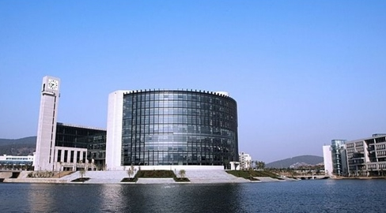

中国矿业大学

世界著名的矿业最高学府，教育部直属全国重点大学，《2009年胡锦涛致贺信、温家宝作批示、刘延东出席共同祝贺中国矿业大学建校100周年》标志矿大从此迈入新的百年征程。
国家(首批22所)“211工程”、“985工程”“优势学科创新平台”、“111计划”重点建设高校，全国56所研究生院高校之一。也是江苏全省四所部省共建高校之一，南京大学、东南大学、中国矿业大学和河海大学。设有中国矿业大学（北京）和孔子学院（澳大利亚）。
中国矿业大学通过长期发展和建设，已经形成了以工科为主、以矿业为特色，理工文管等多学科协调发展的学科专业体系和多科性大学的基本格局。
截至2014年11月，中国矿业大学有全日制普通本科生25000余人，各类硕士、博士研究生11000余人，留学生180余人。校园占地面积4413亩（文昌校区1555亩，南湖校区2858亩），校舍建筑面积130余万平方米。